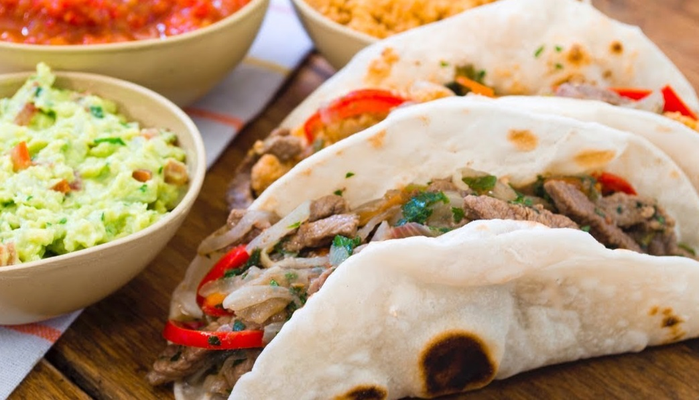
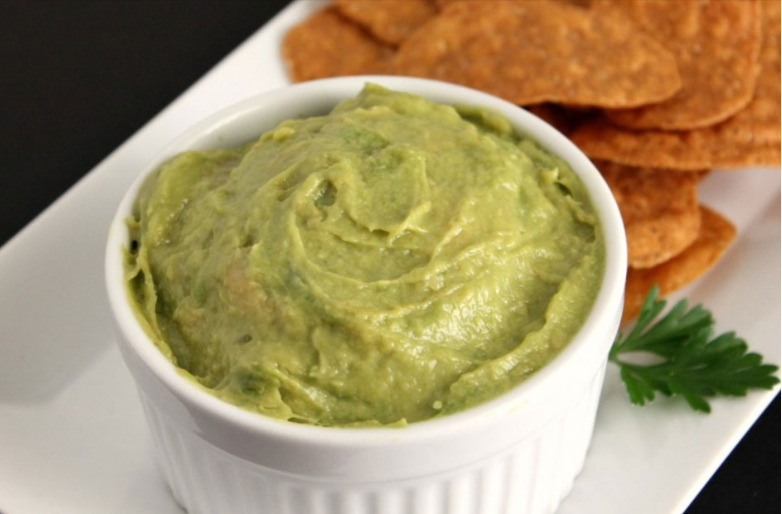

Tacos con salsa Guacamole
Rellenos de pollo y vegetales, son una opción fácil y rica para compartir con amigos.
Este plato típico mexicano se ganó un lugar dentro de la gastronomía de muchos
países. Y lo bueno, es que puede combinarse con distintos ingredientes según el gusto de cada
comensal.
Esta receta es ideal para compartir y lo mejor es que es muy pero muy fácil.

Ingredientes para el Guacamole
- 5 ramas de Cilantro
- 1 tomate mediano
- 1 cebolla grande
- 2 chiles jalapeños
- 4 paltas medianas maduras
- jugo de 2 limones
- aceite de oliva
- Sal y pimienta
- 3 dientes de ajo pelados
Procedimiento
Para comenzar con nuestros tacos mexicanos, picamos los ajos y los cocinamos a
fuego muy suave durante 1 minuto.
Añadimos el medio kilo de tomates, ya pelados y troceados y subimos la potencia del fuego.
Salpimentamos y cocinamos durante un rato. El tomate soltará agua, debe evaporarse toda y
puede tartar un rato. Una vez evaporada dejamos cocinar a fuego suave mientras removemos
constantemente, durante 5 minutos más, para que coja buen sabor.
Cuando se haya cocinado un poco el tomate, añadimos la carne picada que hayamos elegido.
Echamos su parte de sal y pimienta y cocinamos a fuego fuerte. Con una cuchara de madera, vamos
removiendo todo y desmenuzando la carne picada, para que no que queden trozos grandes. De hecho,
cuanto más finos queden mejor. Así que mezclamos con el tomate y el ajo, mientras la
desmenuzamos y cocinamos la carne.
Una vez se haya cocinado, ¡ya está lista! Calentamos una a una las tortillas por sus dos
caras en una sartén a fuego medio. Después ponemos encima unas cucharadas de la carne,
aderezamos con un poco de pico de gallo, las envolvemos dándole la forma característica de taco
¡Y ya está listo!. Opcionalmente puedes espolvorear también queso rallado por encima.
Guacamole

Para el guacamole extraemos la cáscara y las semillas de las paltas (aguacates) y
pisamos la pulpa. Picamos el cilantro, el tomate, el chile y la cebolla en
cuadrados medianos y trituramos el ajo. Mezclamos los anteriores ingledientes con el jugo de
limón, sal, aceite y pimienta y procesamos o licuamos.
¡Y así de fácil y rápido tienes unos tacos mexicanos que están riquísimos! Puedes acompañarlos
de una buena salsa guacamole u otra salsa mexicana a tu gusto. Por último, recalcar que los
auténticos tacos se hacen con carne mechada que se ha dejado cocinar junto con el tomate durante
más de dos horas. Pero esta es una versión rápida que también da muy buenos resultados. ¡Espero
que te guste!